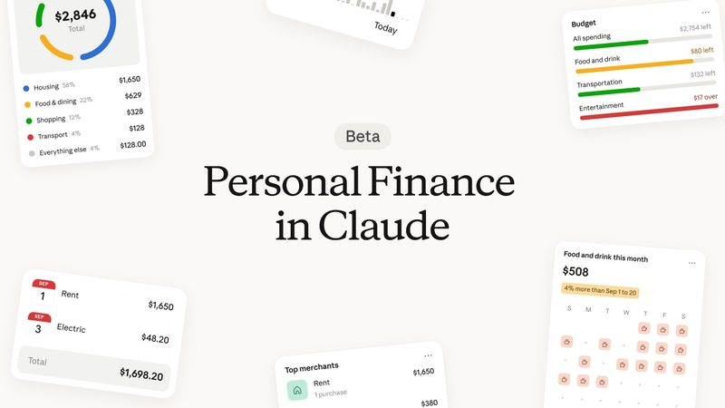
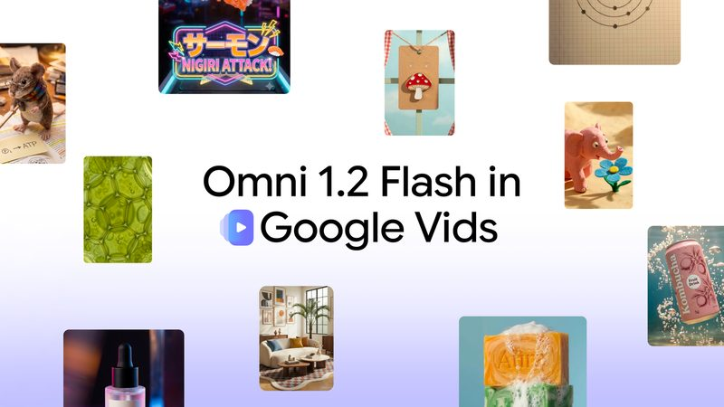
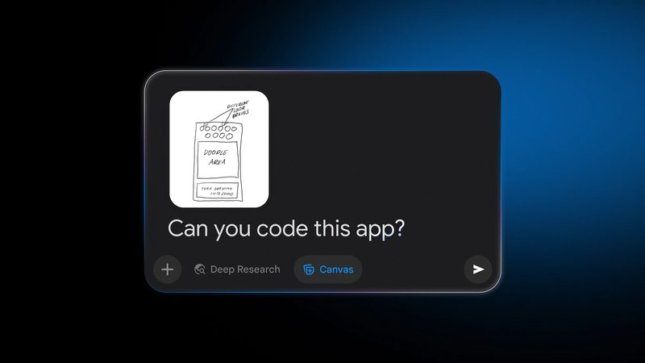
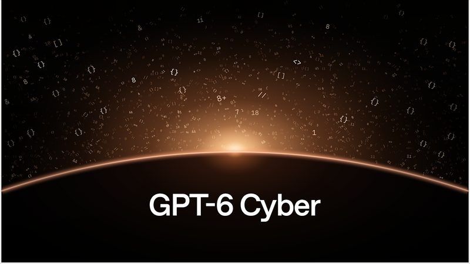

📋 2026/11/6（五） 共 8 則 Claude 推出「個人理財」，連上銀行帳戶幫你算錢花去哪 Meta Muse App 開放即時語音，AI 頭像會跟著做表情 Google Vids 換上 Omni 1.2 Flash，一般帳號每月可免費生成 3 支 AI 影片 拍下手繪草圖，Gemini 就能幫你寫成能用的小 App ElevenLabs 做的 AI 歌曲，可以一鍵發布到 SoundCloud OpenAI 推出資安模型 GPT-6 Cyber，已找出 81 個 Firefox 高風險漏洞 OpenAI 總裁 Brockman：2027 年就能準備好上市 Apple 縮減員工 AI 預算，部分工程師每日上限從 300 降到 200 美元 
圖：Anthropic（經 TechCrunch） 新上線 #1 Claude 推出「個人理財」，連上銀行帳戶幫你算錢花去哪 Anthropic 11 月 5 日（美國時間）宣布 Claude 新功能 Personal Finance，用戶可透過 Plaid 連結銀行與信用卡帳戶，用口語問「這個月錢花到哪裡」，Claude 會跨帳戶加總並分類，也能找出重複扣款、意外手續費或逐月變貴的帳單。官方表示權限只能讀取，不能轉帳、管理或投資，最多看得到兩年交易紀錄。
💡 跟你有什麼關係： 月底想知道哪一類開銷超支、訂閱有沒有被重複扣，不用再一個個打開銀行 App 自己算；也能請它解釋信用卡循環利率這類名詞，算出一年付了多少利息。
⚠️ 目前只在美國、Pro／Max／Ultra 付費方案以 beta 逐步推出，台灣用戶暫時用不到。官方提醒 Claude 可能算錯，重要數字要回銀行核對；在理財專區的對話不拿來訓練模型，專區外的對話依原本隱私設定。不提供投資建議。
📰 原始來源：Claude／Anthropic 官方（2026-11-05） ↗ 圖：Meta 新上線 #2 Meta Muse App 開放即時語音，AI 頭像會跟著做表情 Meta 11 月 5 日（美國時間）宣布，Muse App 的手機、網頁與 Mac 版開始推出即時語音對話，點右上角電話圖示就能講話，可以隨時插話打斷；說話時 Muse 的頭像會配合語氣做表情與手勢，聲音有數百種可選。官方舉例可用來邊走路邊規劃旅行，或練習面試與簡報。
💡 跟你有什麼關係： 手上忙著做菜或通勤走路時，可以直接用講的請 AI 幫忙整理想法；想練習面試的人也多了一個能即時回應的對象。
⚠️ 先在美國推出；官方說之後會擴及 Meta AI 眼鏡與 Muse Charm。頭像是 AI 生成角色，不是真人。
📰 原始來源：Meta Newsroom（2026-11-05） ↗ 
圖：Google 新上線 #3 Google Vids 換上 Omni 1.2 Flash，一般帳號每月可免費生成 3 支 AI 影片 Google 11 月 5 日（美國時間）宣布，影片製作工具 Google Vids 改用最新影片生成模型 Omni 1.2 Flash，只要有 Google 帳號或 Workspace 訂閱，每月可免費生成 3 支、每支 15 秒的影片。上傳參考圖片後，角色與場景能從頭到尾保持一致，旁白聲音也更自然。
💡 跟你有什麼關係： 小店家想做社群短片、學生要做報告開場，不必另外付費買 AI 影片工具，用一張照片加一句描述就能先做出草稿。
⚠️ 免費額度每月只有 3 支、每支 15 秒；官方未說明各地區與語言的開放細節，生成內容仍要自行確認版權與正確性。
📰 原始來源：Google 官方部落格（2026-11-05） ↗ 
圖：Google 教學 #4 拍下手繪草圖，Gemini 就能幫你寫成能用的小 App Google 11 月 5 日（美國時間）分享 Gemini 使用教學：把畫在紙上的 App 草圖、習慣追蹤表或遊戲板拍照上傳，選 Canvas 工具並問「Can you code this app?」，Gemini 會讀圖寫出程式碼。完成後可在預覽視窗直接試用，並請它即時改顏色、字型或功能。
💡 跟你有什麼關係： 不會寫程式的人，也能把腦中的點子先做成可以點的雛型，例如家裡的家事輪值表或小孩的背單字小遊戲。
⚠️ 這是官方使用教學，不是新功能上線；做出來的是簡易雛型，正式使用前仍要自己測試，涉及個資的工具不建議直接上線。
📰 原始來源：Google 官方部落格（2026-11-05） ↗ 圖：SoundCloud／ElevenLabs 工具 #5 ElevenLabs 做的 AI 歌曲，可以一鍵發布到 SoundCloud SoundCloud 與 ElevenLabs 11 月 5 日（美國時間）宣布合作，用 ElevenMusic 生成的音樂可直接發布到 SoundCloud，不用先下載再上傳，SoundCloud 是 ElevenMusic 第一個外部直發平台。SoundCloud Artist Pro 訂閱者可免費使用 3 個月 ElevenMusic Pro，每月最多生成 1,000 首歌。
💡 跟你有什麼關係： 以後在 SoundCloud 聽到的新歌，有更多可能是 AI 做的；直接發布的曲目會標示來自 ElevenMusic，聽眾比較容易分辨。
⚠️ 曲目仍須遵守 SoundCloud 既有的 AI 與版權規範；標示只限從 ElevenMusic 直發的歌曲，其他管道上傳的 AI 歌曲不一定有標示。
📰 原始來源：SoundCloud 官方（2026-11-05） ↗ 
圖：OpenAI 新聞 #6 OpenAI 推出資安模型 GPT-6 Cyber，已找出 81 個 Firefox 高風險漏洞 OpenAI 11 月 5 日發表專門做資安研究的 GPT-6 Cyber，官方表示它協助找出 81 個 Firefox 先前未知的高風險漏洞，並為 948 個 Linux 核心漏洞寫出可運作的攻擊程式，Mozilla 已陸續修補。官方測試中，它在沒有部署提示時有 99.93% 的情況不會去攻擊任務範圍外的服務。
💡 跟你有什麼關係： 這類模型找到的漏洞，最後會變成瀏覽器和系統的安全更新；記得讓 Firefox 等常用軟體保持自動更新。
⚠️ 數字為 OpenAI 自評；模型被列為最高的 Critical 資安風險等級，只開放給審核通過的 Daybreak Red 企業客戶，一般人用不到。
📰 原始來源：OpenAI 官方（2026-11-05） ↗ 圖：TechCrunch 資金 #7 OpenAI 總裁 Brockman：2027 年就能準備好上市 OpenAI 共同創辦人暨總裁 Greg Brockman 11 月 4 日（美國時間）在《華爾街日報》科技研討會上，被問到 2027 年是否能準備好 IPO 時回答「我想可以」。他說第三季 OpenAI 的年化營收季增 70%，主要來自企業業務翻倍，企業營收已占總營收過半，先前約只有三成。
💡 跟你有什麼關係： OpenAI 若上市，ChatGPT 的定價、廣告與功能方向會更受股東與財報壓力影響，一般用戶也會感受到。
⚠️ 本則為二手報導（TechCrunch 轉述研討會發言），未找到 OpenAI 官方公告；「準備好上市」是高層口頭說法，不代表已確定上市日期。
📰 原始來源：TechCrunch（2026-11-05） ↗ 圖：TechCrunch／STR／NurPhoto／Getty Images 觀點 #8 Apple 縮減員工 AI 預算，部分工程師每日上限從 300 降到 200 美元 彭博 11 月 4 日（美國時間）報導，Apple 10 月把部分工程師每天使用 AI 模型的花費上限從 300 美元降到 200 美元，部分團隊可能再降到 100 美元；工程以外的部門不少已是每天 100 美元，Apple 考慮降到最低 25 美元。真的需要更多額度的員工可向高層申請例外。
💡 跟你有什麼關係： 連 Apple 都開始替員工的 AI 用量設上限，反映企業正在重新算 AI 到底划不划算；公司若導入 AI 工具，額度與成本管理也可能成為日常規範。
⚠️ 本則為二手報導（TechCrunch 轉述彭博，依匿名知情人士），Apple 未回應；實際省下多少錢、影響多少人都未說明。
📰 原始來源：TechCrunch（2026-11-04） ↗ ✅ 2026/11/6（五） 可以做： 想試 Google Vids 的免費 AI 影片，可以先準備一張清楚的參考照片和一句具體描述，每月只有 3 支額度，先想好再生成比較不浪費。
🗂️ 過去 14 天